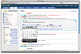
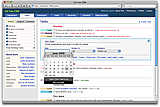
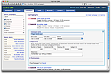
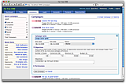
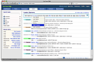
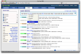
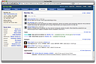
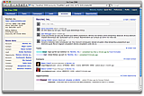

"First they ignore you, then they laugh at you, then they fight you, then you win." -- Mahatma Gandhi
Fat Free CRM
Help us improve Fat Free CRM.
Please take a moment to complete User Survey. Thank you!
What
Fat Free CRM is an open source Ruby
on Rails-based
customer
relationship management platform. Out of the box it features group
collaboration, campaign and lead management, contact
lists, and opportunity tracking.
My thanks go to early adopters, beta testers, and open source enthusiasts for overwhelming positive feedback, words of encouragement, and inspiration. Keep your ideas coming!
The project goal is to spur CRM innovation by providing clean code base that can be easily extended by developers. Check it out and fork away!
My thanks go to early adopters, beta testers, and open source enthusiasts for overwhelming positive feedback, words of encouragement, and inspiration. Keep your ideas coming!
The project goal is to spur CRM innovation by providing clean code base that can be easily extended by developers. Check it out and fork away!
Where
Source code of Fat Free CRM is hosted at
Github. Other helpful resources:
» Source code downloads
» Guides
» Bug reports and feature requests
» List of available plugins
» Discussion group for users
» Discussion group for developers
» Twitter commit updates
» Senbei: iPhone client software
» Online demo site
» Source code downloads
» Guides
» Bug reports and feature requests
» List of available plugins
» Discussion group for users
» Discussion group for developers
» Twitter commit updates
» Senbei: iPhone client software
» Online demo site
Who


 


 

 

 



{kind=link}
{kind=link}
{kind=link}
{kind=link}